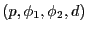
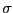
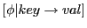
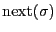
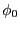
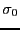

Next: Syntax Up: Yet Another Lisp Interpreting Previous: Introduction
We will also be taking a less conventional approach to specifying the semantics of our language. With the goal of unifying code and data, we will first describe the translation from syntax to literal objects and then separately define the methods available to those objects. This is also intended to highlight the fact that the vast majority of the functionality of Yalie is contained in predefined methods for our objects, rather than in the syntax of our language.
The semantics of our language will be built from three components: objects, the scope, and the store. Objects will be treated as simple tuples, of the form , containing a reference to a parent object, a scope of methods, a scope of member objects, and a data field for builtin data like integers. Scopes--denoted by --are maps from names to natural numbers or (in the case of method scopes) functions, and the store--denoted by --is a map from natural numbers to objects. In this way, the store is intended to simulate a persistent memory of mutable objects, and for our purposes we can understand the store as unique (in contrast to scopes, of which there will be many). The extension of a scope or store is represented by the expression `` ''. The smallest currently unassigned integer in a store is denoted by `` ''. The empty scope and the empty store are denoted by  and , respectively.
We have put Yalie together so that externally it resembles a traditional Lisp, but the underlying semantics are very different. In particular, functions and special forms are just objects with a predefined ``call'' method. The mechanism of a function call is that the ``eval'' method of a list implicitly evaluates its first element and passes the rest of the list as arguments to the first element's call method. The ``msg'' special form is then provided with a call method that allows the user to pass arbitrary messages.
Jack O'Connor 2009-05-04